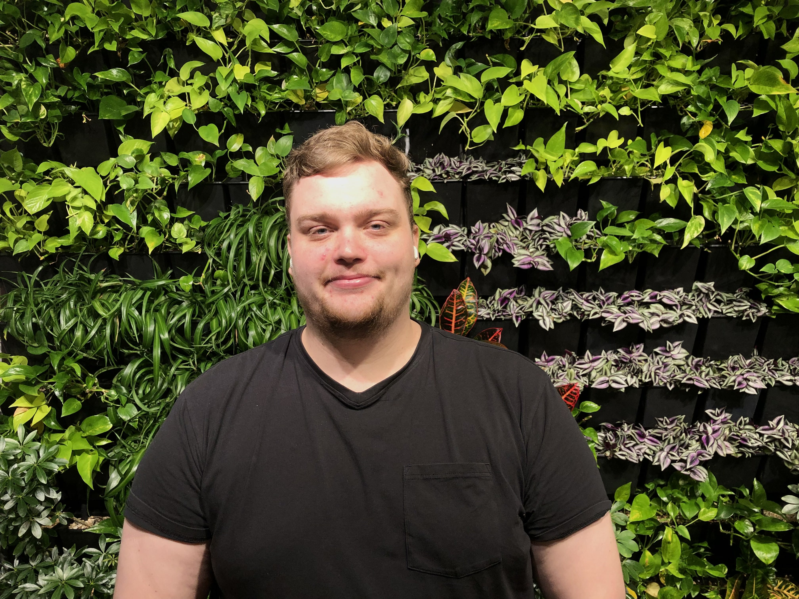
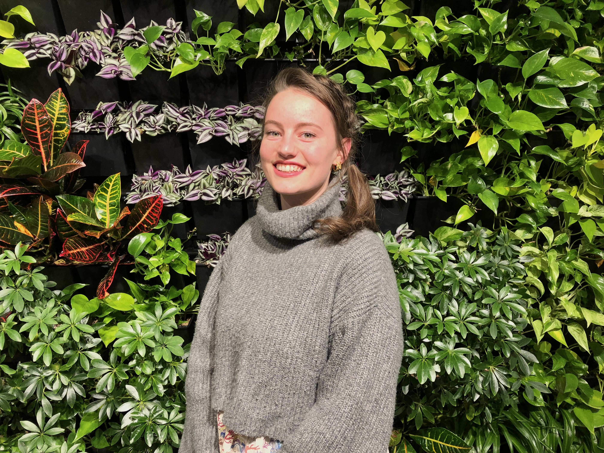
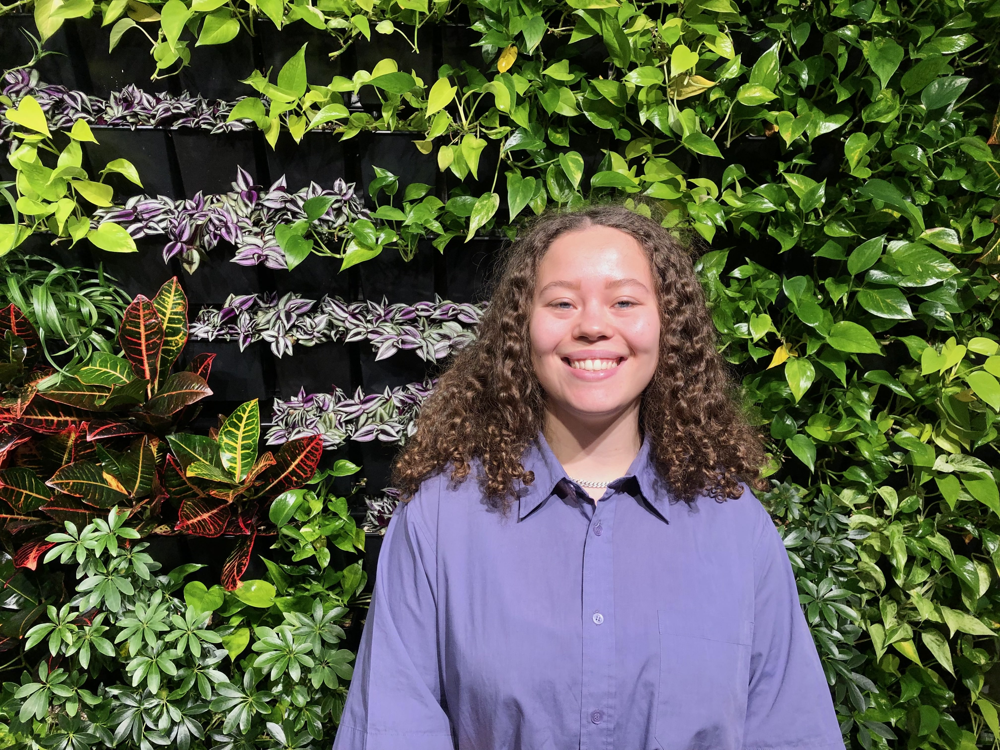
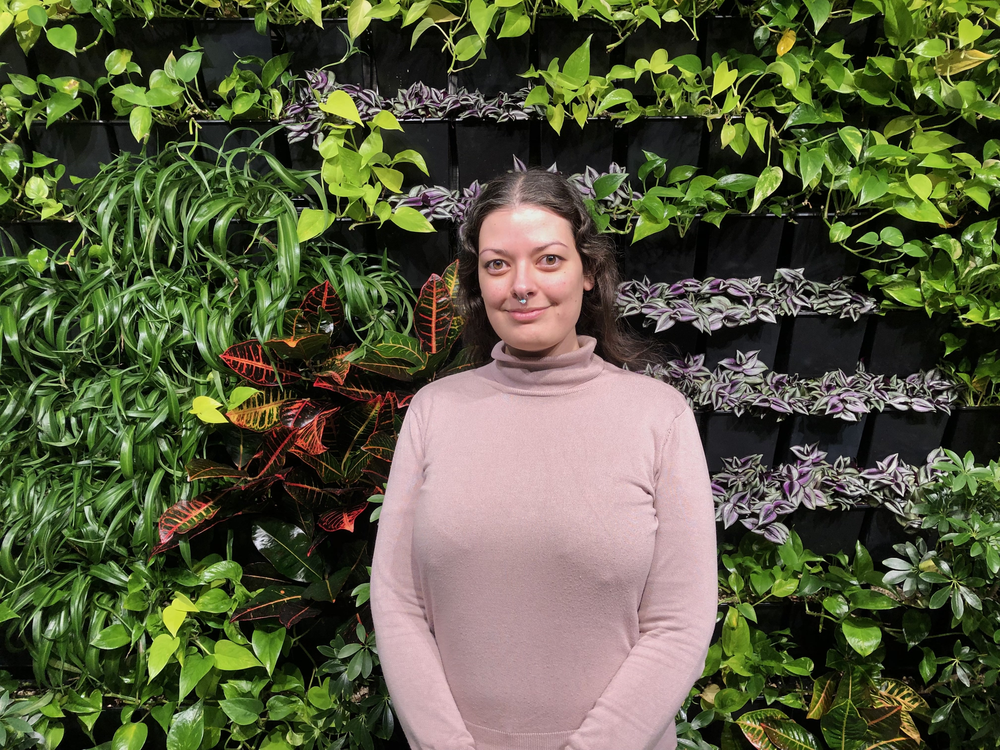

Hos Viridis er vi fire planteglade mennesker, med en stor passion
for stueplanter.
Vi vil gerne kunne dele vores passion med andre ligesindede, der
brænder lige så meget for stueplanter som vi selv gør. Det
fantastiske ved stueplanter er, at de giver et godt indeklima og
skaber en hyggelig stemning i alle hjem. Om os: Vi er fire venner
der stiftede vores egen instagram konto for at sprede
plante-kærlighed. Det gik hurtigt op for os, at der fandtes mange
plante entusiaster derude. Derfor besluttede vi os for at skabe en
hjemmeside, der både kunne informere andre om hvordan, de skal
vedlige deres plante samt også, sprede vores kærlighed for planter.
Et grønt univers for ligesindede plante-elskere
Mikkel
Plantoholic koder
”Et hjem uden planter er ikke et hjem”
Nina
Boss Lady
”Crazy plant lady”
Julie
Grafisk Design
”Du skal ikke sige et ondt ord om mine planter”
Cirkeline
Founder
"Det er med planter som kærlighed: de skal nydes mens de er grønne"